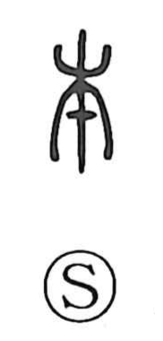

本

Uncategorized
Kun: moto | On: hon
root ・ origin ・ basis ・ book
Explanation
An indicative graph built on 木, the tree: by adding a conspicuous dot or stroke at the lower part of the trunk, the ancient form points to the base and roots, yielding the senses of “root,” “origin,” and by extension “basis” and the “beginning” of things. In later usage it also came to denote a volume and to serve as the counter for books (ippon, nihon), hence “book.” Marking the top of 木 instead produces 末, the treetop or “end”; paired together as 本末, they evoke “root and tip,” the beginning and the end.